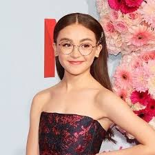

Glumci filma "To All the Boys I've Loved Before"
Nazad
Lana Condor (Lara Jean Covey)
Noah Centineo (Peter Kavinski)
Anna Cathcart (Kitty)

Janel Parrish (Margot)
Israel Broussard (Josh)
Madeleine Arthur (Christine)
Emilija Baranac (Gen)